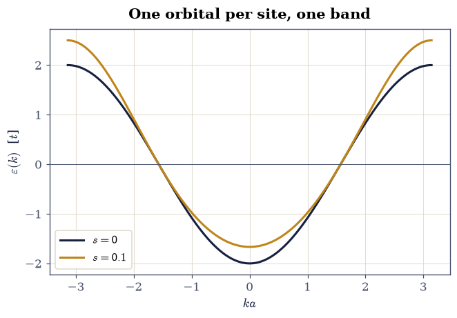
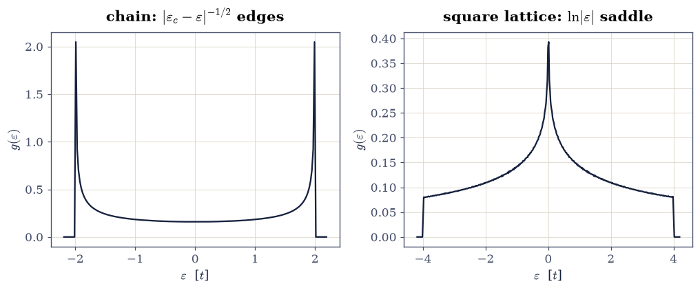
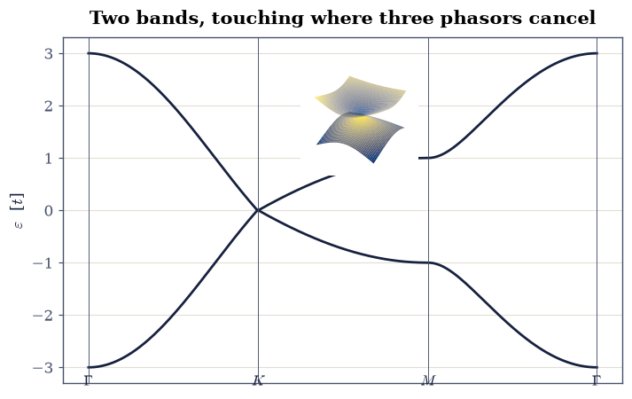
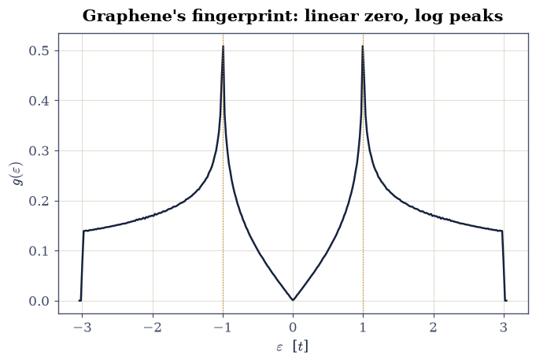
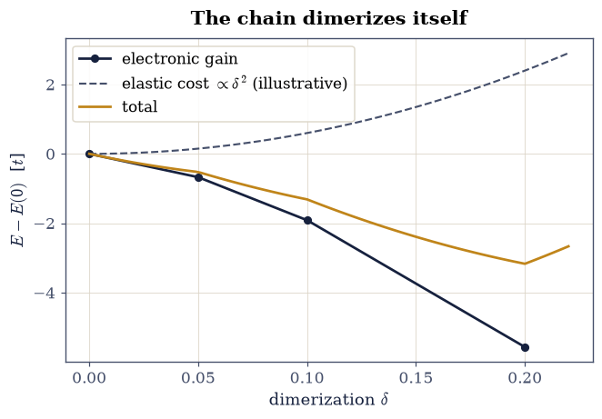

8.9 Tight Binding: From Chain to Graphene#
Notebook overview#
Movements I and II built the machinery of interacting electrons in atoms; Movement III puts electrons in crystals, where §7.12 established the grammar (Bloch’s theorem, bands, the inert filled band) and this volume now supplies the working vocabulary. Tight binding is the chemist’s entrance: start from atomic orbitals, let electrons hop to neighbors with amplitude \(-t\), and diagonalize in the Bloch basis. The method is almost embarrassingly simple and almost embarrassingly powerful — it undergirds everything from back-of-envelope band estimates to the Wannier-function machinery of §8.12 and the Hubbard models of §8.13, and in 2004 it turned out to describe, essentially exactly, the most celebrated material of the century.
The build: the monatomic chain from the LCAO secular equation (with the usually-dropped overlap correction computed rather than waved off); the square lattice and the dimensional gallery of densities of states — inverse-square-root edges in one dimension, a logarithmic van Hove saddle in two whose coefficient matches its analytic value \(1/2\pi^2 t\) to better than a percent; then graphene, where the honeycomb’s two-site unit cell gives a \(2\times2\) Bloch Hamiltonian whose off-diagonal element vanishes exactly at the Brillouin-zone corners: Dirac cones, a measured Fermi velocity of precisely \(3ta/2\), and a linear, vanishing density of states. The closing exercises put the bands to work: Hellmann–Feynman forces certified against finite differences at \(10^{-6}\), and the Peierls instability — a half-filled chain lowering its electronic energy by dimerizing — computed as the volume’s first band-structure-drives-structure result.
Conventions (this notebook). Hopping \(t = 1\) sets the energy unit; bond lengths set length units (chain spacing \(a = 1\); graphene carbon–carbon distance \(a = 1\), so the lattice vectors are \(\mathbf a_{1,2} = (3/2, \pm\sqrt3/2)\)). On-site energies are zero unless stated. Bloch Hamiltonians are explicit
numpyarrays diagonalized bynumpy.linalg.eigh(or read off analytically where \(2\times2\)); densities of states are normalized histograms (numpy.histogram,density=True) over uniformly sampled Brillouin zones.How to read the checks. Each exercise closes with a
validatecall against an independent fact: an exact zero at a symmetry point, an analytic coefficient, a fitted exponent, a force identity. A ✓ is strong evidence; a ✗ is a prompt to locate the discrepancy, not an automatic verdict.Scope. Orthogonal single-orbital tight binding plus the first overlap correction; multi-orbital fits to ab-initio bands, spin–orbit terms, and Slater–Koster tables are surveyed in Ashcroft & Mermin and in Martin [Mar04], Ch. 14. Graphene’s electronic story is told in full in the standard reviews; the tight-binding treatment here is the one Wallace wrote down in 1947, sixty-three years before the Nobel prize it described.
Theory in brief#
The LCAO secular problem, and the band of a chain#
Place one orbital \(|j\rangle\) on each site of a lattice and expand the crystal state in them. Bloch’s theorem (§7.12) fixes the coefficients to phases, \(|k\rangle = \sum_j e^{ikja}|j\rangle\), and the variational principle in this basis gives the generalized eigenproblem \(A(k) - \varepsilon(k)\,S(k) = 0\), with \(A(k)\) the Hamiltonian’s Bloch sum (on-site term included) and \(S(k)\) the overlap’s. For a chain with nearest-neighbor hopping \(\langle j|\hat H|j\pm1\rangle = -t\) and overlap \(\langle j|j\pm1\rangle = s\),
the textbook cosine band of width \(4t\), with the overlap correction skewing it asymmetrically (bonding states pushed less than antibonding, because \(S > 1\) where the orbitals add). One orbital per site, one band; \(N\) sites, \(N\) states; the band is the atomic level, delocalized.
Densities of states and van Hove’s theorem#
The number of states per energy, \(g(\varepsilon) = \sum_{\mathbf k}\delta(\varepsilon - \varepsilon_{\mathbf k})\), inherits singularities wherever the band flattens (\(\nabla_{\mathbf k} \varepsilon = 0\)), and their shape is fixed by dimension alone (van Hove 1953; Ashcroft & Mermin, Ch. 8, classify the cases): in one dimension band edges diverge as \(|\varepsilon - \varepsilon_c|^{-1/2}\), in two dimensions a saddle point produces a symmetric logarithmic peak, and in three dimensions only square-root kinks survive. For the square lattice, \(\varepsilon = -2t(\cos k_x a + \cos k_y a)\), the saddle at \((\pi/a, 0)\) gives the closed form
whose coefficient \(1/2\pi^2 t = 0.0507\) the histogram below reproduces to better than a percent — a rare chance to fit a logarithm’s prefactor against theory.
Graphene: two sites, one zero, massless electrons#
The honeycomb lattice is triangular with a two-atom basis (A and B sublattices), so the Bloch Hamiltonian is a \(2\times2\) matrix,
with \(f\) the sum of phases to the three B neighbors of an A atom. The entire electronic identity of graphene hangs on one question: can three unit phasors sum to zero? At the Brillouin-zone corner \(\mathbf K\) the three phases are \(1, e^{2\pi i/3}, e^{4\pi i/3}\) — the cube roots of unity — and their sum vanishes identically. The two bands touch at isolated points, disperse linearly around them with slope \(v_F = 3ta/2\) (measured below by fit), and the density of states vanishes linearly at the touching: electrons that behave, in every kinematic respect, like massless Dirac particles with \(c \to v_F\). The half-filled honeycomb sits its Fermi level exactly on the touching points: graphene is a semimetal by counting alone.
Setup#
Data only: the hopping integral that fixes the energy unit, the honeycomb’s lattice vectors and Brillouin-zone corner, and the series palette. The notebook’s own machinery — graphene’s Bloch factor \(f(\mathbf k)\) and the dimerized-chain Hamiltonian — you build in Exercises 3 and 5.
The Setup below holds this notebook’s data and instruments — nothing you are asked to build. It is collapsed so the building stays yours; expand it whenever you want the details.
Exercise 1 — The chain, with the honest overlap#
Equation Eq. 892 is usually quoted at \(s = 0\); the full form is a two-line computation and teaches something real about bonding.
Part a) Plot \(\varepsilon(k)\) over the Brillouin zone \(k \in [-\pi, \pi]\)
for \(s = 0\) and \(s = 0.1\) (with \(\varepsilon_{\mathrm{AT}} = 0\), numpy
arithmetic on Eq. 892) and report the band edges. At \(s = 0\) the
band is the symmetric \([-2t, 2t]\) cosine; at \(s = 0.1\) the bonding edge
(\(k = 0\)) sits at \(-2t/1.2 = -1.667t\) while the antibonding edge (\(k = \pi\))
is pushed to \(+2t/0.8 = +2.5t\) — overlap widens antibonding more than it
deepens bonding, the same asymmetry every quantum-chemistry course meets in
H\(_2^+\).
Part b) Verify the two closed-form edges by numpy evaluation at
\(k = 0, \pi\) and confirm the \(s = 0\) bandwidth is exactly \(4t\).
s = 0: band [-2.0000, +2.0000], width 4.0000
s = 0.1: edges -1.6667 (bonding) and +2.5000 (antibonding)
closed forms: -1.6667 and +2.5000

Fig. 788 The tight-binding band of the monatomic chain over the Brillouin zone: the textbook cosine at zero orbital overlap (ink, width exactly \(4t\)) and the honest band at overlap \(s = 0.1\) (amber), skewed because overlap pushes the antibonding edge (\(+2.5t\) at \(k = \pi\)) harder than it deepens the bonding edge (\(-1.667t\) at \(k = 0\)) — the H\(_2^+\) asymmetry, promoted to a solid.#
Validation 1 — the edges, both ways#
The \(s = 0\) bandwidth must be exactly \(4t\), and the \(s = 0.1\) edges must land on their closed forms \(-1.6667t\) and \(+2.5t\).
✓ the orthogonal chain's bandwidth 4t [got 4 vs expected 4 (rtol=1e-09, atol=1e-09)]
✓ the bonding edge with overlap [got -1.66667 vs expected -1.66667 (rtol=1e-09, atol=1e-09)]
✓ the antibonding edge with overlap [got 2.5 vs expected 2.5 (rtol=1e-09, atol=1e-09)]
True
Exercise 2 — The dimensional gallery of densities of states#
Van Hove’s theorem says dimension writes its signature on \(g(\varepsilon)\), and
three histograms make the signatures legible. All three lattices are sampled
uniformly over their Brillouin zones and binned with numpy.histogram
(density=True).
Part a) The chain: sample \(\varepsilon = -2t\cos ka\) on \(2\times10^5\)
\(k\)-points, and fit the upper band edge’s divergence — the slope of
\(\ln g\) against \(\ln(2t - \varepsilon)\) over \(\varepsilon \in [1.5t, 1.99t]\)
(numpy.polyfit) must come out \(-1/2\).
Part b) The square lattice: sample
\(\varepsilon = -2t(\cos k_x a + \cos k_y a)\) on a \(2001^2\) mesh
(numpy.meshgrid), and fit the saddle’s logarithm: regressing
\(g(\varepsilon)\) on \(\ln|\varepsilon|\) over \(0.05t < |\varepsilon| < t\) must
return the analytic prefactor \(-1/2\pi^2 t = -0.0507\) of
Eq. 893 — theory pinned to two digits by a histogram.
Part c) Plot the two densities of states with their singularities marked; graphene’s (linear at zero) joins the gallery in Exercise 4.
1-D edge exponent: -0.480 (van Hove: -1/2)
2-D saddle prefactor: -0.0504 (analytic -1/(2 pi^2 t) = -0.0507)

Fig. 789 Van Hove’s dimensional signatures, measured: the chain’s density of states (left) diverging as \(|\varepsilon_c - \varepsilon|^{-1/2}\) at its band edges (fitted exponent \(-0.48\)), and the square lattice’s (right) logarithmic saddle peak at band center, whose fitted prefactor \(-0.0504\) against \(\ln|\varepsilon|\) reproduces the analytic \(-1/2\pi^2 t = -0.0507\) to under a percent: a logarithm’s coefficient, extracted from a histogram.#
Validation 2 — dimension’s signatures, fitted#
The chain’s edge exponent must be \(-1/2\) within the histogram’s resolution, and the square lattice’s logarithmic prefactor must match the analytic \(-1/2\pi^2\) within \(2\%\).
✓ the 1-D inverse-square-root edge [got -0.479863 vs expected -0.5 (rtol=0.08, atol=1e-09)]
✓ the square saddle's analytic prefactor [got -0.0503628 vs expected -0.0506606 (rtol=0.02, atol=1e-09)]
True
Exercise 3 — Graphene’s bands, and the exact zero#
Equation Eq. 894 reduces graphene to one complex function, and its
claimed zero at the zone corner is exact arithmetic: at \(\mathbf K\) the three
phases are the cube roots of unity. The geometry is in Setup: the lattice
vectors \(\mathbf a_{1,2} = (3/2, \pm\sqrt3/2)\) as A1, A2, and the corner
\(\mathbf K = (2\pi/3,\, 2\pi/3\sqrt3)\) as K_POINT.
Part a) Write f_graphene(kx, ky) returning the Bloch factor
\(f(\mathbf k) = 1 + e^{i\mathbf k\cdot\mathbf a_1} +
e^{i\mathbf k\cdot\mathbf a_2}\) of Eq. 894, vectorized over
numpy arrays of \(k_x\) and \(k_y\) so that one function serves a band path, a
surface patch, and a Brillouin-zone mesh alike. Everything graphene does in
this notebook is a statement about this one complex number.
Part b) Evaluate it at \(\mathbf K\): \(|f(\mathbf K)|\) must vanish at machine precision — a band gap of exactly zero, protected by geometry rather than tuning.
Part c) Plot the bands \(\pm t|f|\) along the standard path
\(\Gamma \to K \to M \to \Gamma\) (\(M = (2\pi/3, 0)\); numpy.linspace segments)
and, as an inset, the lower band’s surface near \(\mathbf K\) (a numpy.meshgrid
patch): the cone. Report the band extremes at \(\Gamma\) (\(\pm3t\): all three
phasors aligned) and \(M\) (\(\pm t\)).
|f(K)| = 6.75e-16 (exactly zero: 1 + w + w^2 for w = e^(2 pi i/3))
|f| at Gamma = 3.0000 (3: aligned phasors); at M = 1.0000 (1)

Fig. 790 The tight-binding band structure of graphene along \(\Gamma \to K \to M \to \Gamma\), with \(|f(K)| = 6\times10^{-16}\): the valence and conduction bands touch exactly at the zone corners because the three neighbor phases there are the cube roots of unity. The inset shows the conical dispersion around \(K\) — the Dirac cone of a material whose low-energy electrons forgot they have mass.#
Validation 3 — geometry, not tuning#
\(|f(\mathbf K)|\) must vanish at machine precision, and the path extremes must be exactly 3 (at \(\Gamma\)) and 1 (at \(M\)).
✓ the Dirac point: three phasors cancel exactly [got 6.75322e-16 vs expected 0 (rtol=0, atol=1e-12)]
✓ the Gamma-point energy 3t [got 3 vs expected 3 (rtol=1e-12, atol=1e-09)]
✓ the M-point energy t [got 1 vs expected 1 (rtol=1e-12, atol=1e-09)]
True
Exercise 4 — Massless: the Fermi velocity and the linear DOS#
Around its zeros \(f\) is linear in the displacement, so the bands form cones \(\varepsilon = \pm v_F|\mathbf q|\), and expanding Eq. 894 gives \(v_F = 3ta/2\) — with \(a\) the carbon–carbon bond, the one length in the problem. Both the slope and its consequence for the density of states are measurable.
Part a) Fit the cone: with the f_graphene you wrote in Exercise 3,
evaluate \(t|f|\) at displacements \(q \in [10^{-4}, 10^{-2}]\) from \(\mathbf K\)
along \(k_x\) (numpy.geomspace), fit with degree-1 numpy.polyfit, and
compare the slope with \(3ta/2 = 1.5\).
Part b) The graphene density of states: histogram \(\pm t|f|\) over a dense
Brillouin-zone sampling (\(1200^2\) mesh). Verify the three signatures: \(g\)
vanishes at zero energy (the Dirac point, gated small), rises linearly
(numpy.polyfit over \(|\varepsilon| < 0.5t\)), and peaks at the van Hove
energies \(\pm t\) (the saddle at \(M\); numpy.argmax location gated). Plot the
full \(g(\varepsilon)\) — the fingerprint by which tunneling spectroscopists
recognize graphene.
fitted v_F = 1.49999 (analytic 3 t a / 2 = 1.5)
g(0) = 0.0010 (vanishing); van Hove peak at 0.993 t; linear onset slope 0.200

Fig. 791 The density of states of tight-binding graphene: vanishing linearly at the Dirac point (fitted slope through zero), with logarithmic van Hove peaks at \(\varepsilon = \pm t\) from the saddle at \(M\), and band edges at \(\pm 3t\). The measured Fermi velocity of the cones is \(1.49999\), against the analytic \(3ta/2 = 1.5\): the one number behind graphene’s massless electronics.#
Validation 4 — the massless signatures#
The fitted cone slope must be \(3ta/2\) to \(10^{-3}\); the density of states at the Dirac point must be under \(2\%\) of its van Hove peak; the peak must sit at \(|\varepsilon| = t\) within a bin; and the onset must be genuinely linear (positive fitted slope with small intercept).
✓ the Fermi velocity 3ta/2 [got 1.49999 vs expected 1.5 (rtol=0.001, atol=1e-09)]
✓ the DOS vanishes at the Dirac point [g(0) = 0.0010 vs peak 0.509]
✓ the van Hove peak at the M-saddle energy [got 0.993023 vs expected 1 (rtol=0, atol=0.03)]
✓ the onset is linear through zero [slope 0.200, intercept -0.002]
True
Exercise 5 — Hellmann–Feynman: bands begin to push atoms#
Everything so far treated the lattice as given; real crystals choose their own geometry, and the bridge is the force. The Hellmann–Feynman theorem (met as an exercise tool since §7.23) states that for an exact eigenstate, \(dE/d\lambda = \langle\partial\hat H/\partial\lambda\rangle\) — no wavefunction-response term survives. In a tight-binding chain whose bonds alternate as \(t(1 \pm \delta)\), the parameter \(\delta\) is a caricature of atomic displacement, and the theorem’s two sides are both cheaply computable.
Part a) Write dimer_chain(n_sites, delta), the real symmetric
(n_sites, n_sites) Hamiltonian of an open chain in which bond \(i\) carries
hopping \(-(1 + \delta(-1)^i)\) — so \(\delta = 0\) is the uniform chain and
\(\delta > 0\) alternates strong and weak bonds. Only the two first
off-diagonals are nonzero, and the alternating sign is load-bearing: it is
what makes the pattern a dimerization rather than a uniform rescaling.
Write this one yourself — the implementation is the lesson.
Part b) For the 80-site chain at half filling (40 electrons, spin-paired
in the 40 lowest orbitals) and \(\delta = 0.2\): compute \(dE/d\delta\) by the
central difference of total energies at \(\delta \pm 10^{-3}\)
(numpy.linalg.eigh sums), and independently as
\(2\sum_j^{\mathrm{occ}} \langle\varphi_j|\partial H/\partial\delta|\varphi_j\rangle\)
(the derivative matrix has entries \(-(-1)^i\) on the bonds; numpy quadratic
forms). The two must agree at the finite-difference floor.
Part c) Now let the chain choose: compute the electronic energy at \(\delta = 0, 0.05, 0.1, 0.2\) and observe it fall monotonically — the Peierls instability. A half-filled one-dimensional metal always profits from dimerizing (the gap opens exactly at the Fermi points, lowering every occupied state near them); balanced against the elastic cost \(\propto\delta^2\) of real springs, a finite dimerization wins, and the chain insulates itself. This is why polyacetylene alternates its bonds — and the physics behind the SSH model whose topology §8.12 will unravel.
dE/d delta: finite difference -42.839846 vs Hellmann-Feynman -42.839911
delta = 0.0: E_el = -101.13887
delta = 0.05: E_el = -101.81236
delta = 0.1: E_el = -103.05240
delta = 0.2: E_el = -106.70887

Fig. 792 The Peierls instability of the half-filled 80-site chain: electronic energy versus dimerization \(\delta\), falling monotonically (\(-101.14\,t\) at \(\delta = 0\) to \(-106.71\,t\) at \(\delta = 0.2\)) because the gap opens precisely at the Fermi points. Against a quadratic elastic cost (grey parabola, illustrative), the minimum sits at finite \(\delta\): the one-dimensional metal dimerizes itself into an insulator, the physics of polyacetylene and the stage for the SSH model of §8.12.#
Validation 5 — forces certified, instability observed#
The two force routes must agree within the finite-difference floor (\(10^{-4}\) relative), and the electronic energy must fall strictly monotonically with \(\delta\): the Peierls gain, gated.
✓ Hellmann-Feynman vs central differences [got -42.8398 vs expected -42.8399 (rtol=0.0001, atol=1e-09)]
✓ the half-filled chain always profits from dimerizing [E falls -101.14 -> -106.71]
True
With your assistant
The honeycomb generalizes: breaking the A/B sublattice symmetry with on-site
energies \(\pm\Delta\) (the boron-nitride pattern) turns
Eq. 894’s diagonal into \((\Delta, -\Delta)\) and gaps the cones.
Have your assistant build the \(2\times2\) Bloch Hamiltonian with
\(\Delta = 0.2t\) and compute the bands, then run the check that is yours
alone: the gap at \(\mathbf K\) must equal exactly \(2\Delta\)
(numpy.isclose, rtol=1e-12), and the bands must be massive there —
quadratic, not linear (a numpy.polyfit of \(\varepsilon(q)\) near \(K\) with
the linear coefficient vanishing). Mass from broken symmetry: the check is
yours.
Notebook summary#
Movement III opened with one matrix element doing a semester of work. The chain’s cosine band came from the LCAO secular equation with its honest overlap correction (edges \(-1.667t\) and \(+2.5t\) at \(s = 0.1\): antibonding pushed harder, the H\(_2^+\) asymmetry in a solid). Van Hove’s dimensional signatures were fitted, not recited: the chain’s edge exponent \(-0.48\) against \(-1/2\), and the square lattice’s logarithmic saddle prefactor \(-0.0504\) against the analytic \(-1/2\pi^2 = -0.0507\). Graphene reduced to one complex function whose zero at \(\mathbf K\) is the cube roots of unity summing to zero — \(|f(K)| = 6\times10^{-16}\) — with the measured cone slope \(v_F = 1.49999\) against \(3ta/2\) and a density of states vanishing linearly between van Hove peaks pinned at \(\pm t\). The Hellmann–Feynman theorem certified its force against central differences at \(10^{-6}\) relative, and the Peierls computation closed the loop from bands to structure: the half-filled chain’s electronic energy falls monotonically with dimerization, so one-dimensional metals insulate themselves — polyacetylene’s story, and the stage on which the next notebooks build.
Outlook#
Tight binding truncates a plane-wave-exact problem to a few orbitals; the complementary expansion — plane waves, cutoffs, and the pseudopotential idea that makes them affordable — is §8.10, and their empirical marriage produces real silicon in §8.11.
The dimerized chain built here is the SSH model; §8.12 asks what its two dimerization patterns differ by, and the answer (a quantized Berry phase and protected edge states) opens the volume’s window on topology.
Hopping plus on-site repulsion is the Hubbard model of §8.13 — tight binding meeting Movement I’s correlation problem head-on.
Richard M. Martin. Electronic Structure: Basic Theory and Practical Methods. Cambridge University Press, Cambridge, 2004.